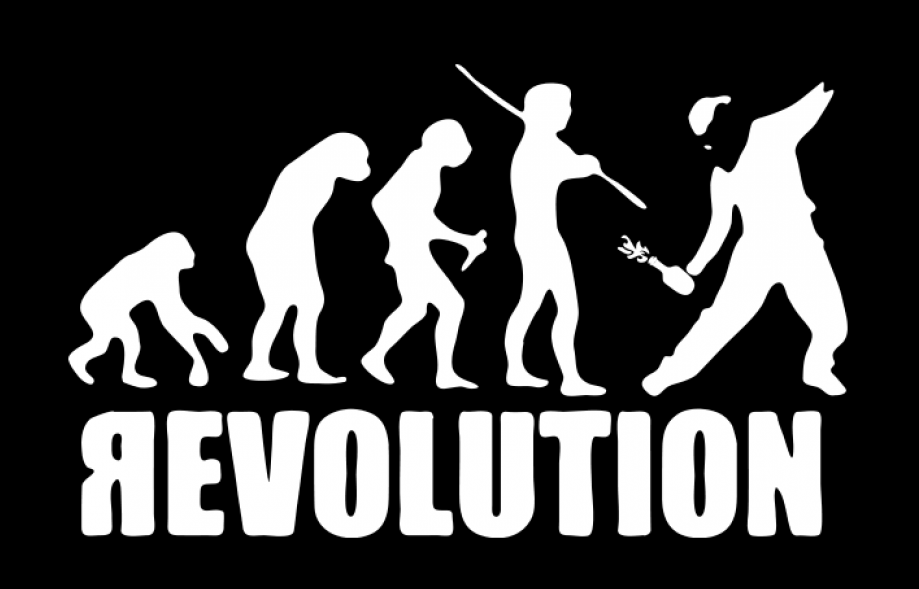
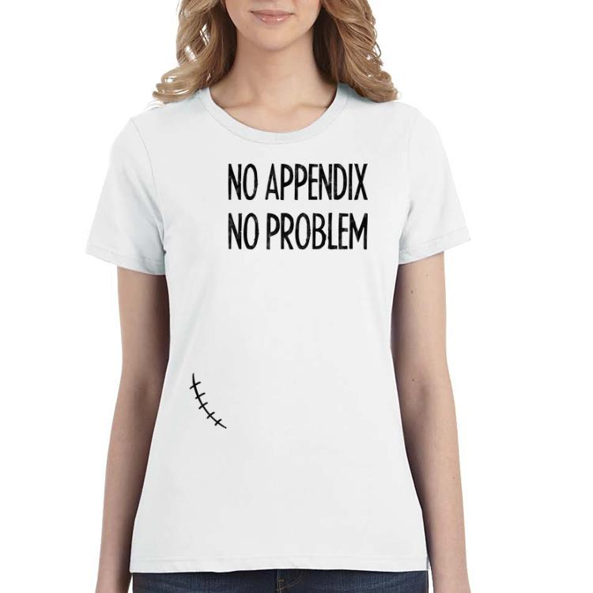
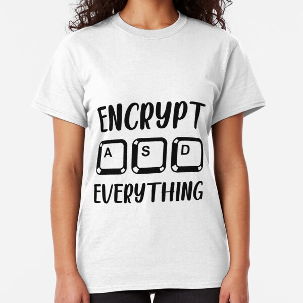
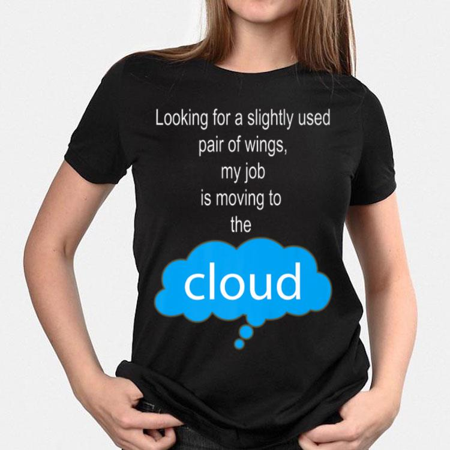
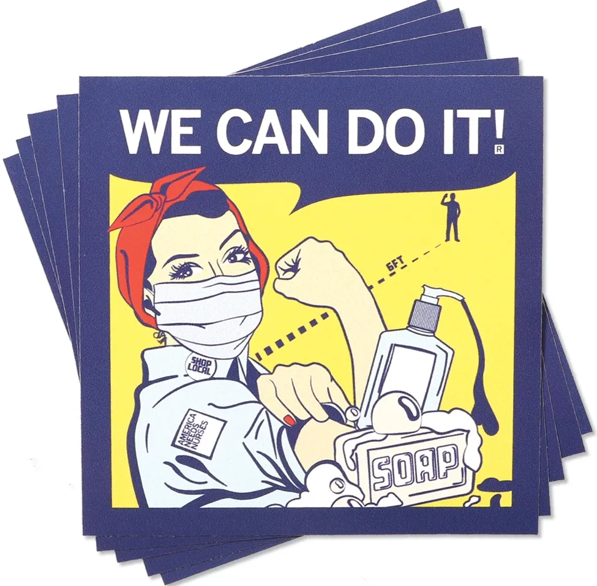

Z minulosti
- filesharing: problémy s platebními kanály
- cloud = uloz.to — search
Z darů EU
- nová evropská legislativa, v ČR platná nejpozději od poloviny 2021
- obrovské regulačně/cenzorní požadavky na obsah celého internetu
- cloud = výjimka (tzn. ještě větší motivace stát se cloudem)
- bezpečný cloud = šifrování jako výchozí volba
Takže?

- ano, jsou to revoluční změny
- musíme je ale řešit evolučně
- a to ve třech krocích
I. Vyhledávání

- Ulož.to bez Vyhledávání a Podobných souborů
- s odkazy na site-search třetích stran (Google, Bing, ...)
- pomůžeme vybudovat i jednu novou třetí stranu
II. Šifrování

- nechceme implementovat cenzuru
- funkce Zaheslované soubory na steroidech
- tj. podpora E2E (End To End) šifrování souborů
- uživatelé mohou sdílet i zašifrovaný obsah, musí ale dodat přístupové údaje
III. Cloudovost

- posílení prodeje cloudového prostoru, ve více variantách
- subscripce, verzování obsahu, synchronizace dat, zálohování
- jiné/nové podmínky prodeje reklamy
Dá se to zvládnout

- je to fůra práce, ale pomohou nám i externisti
- do roka MVP, poté bugfixing a chybějící vlastnosti
- postupná realizace, ve třech krocích
Díky za bdělou pozornost...
Otázky?